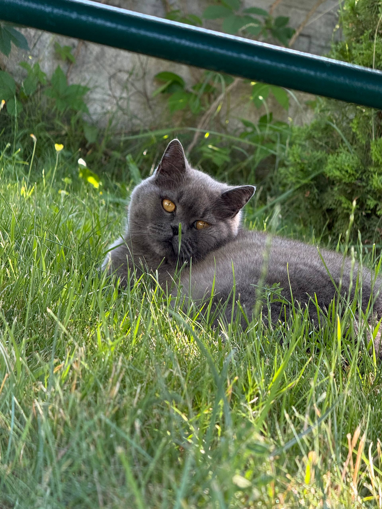
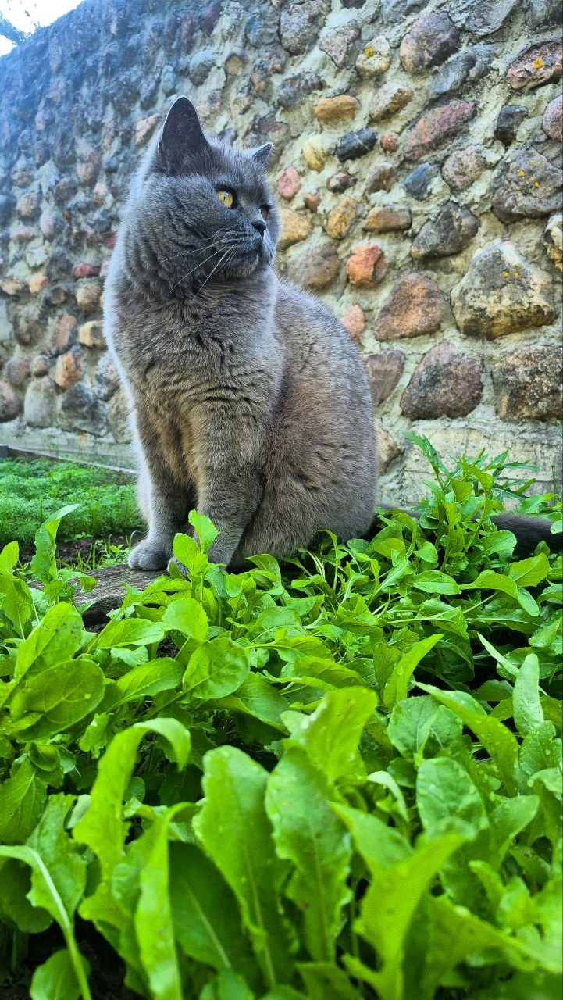
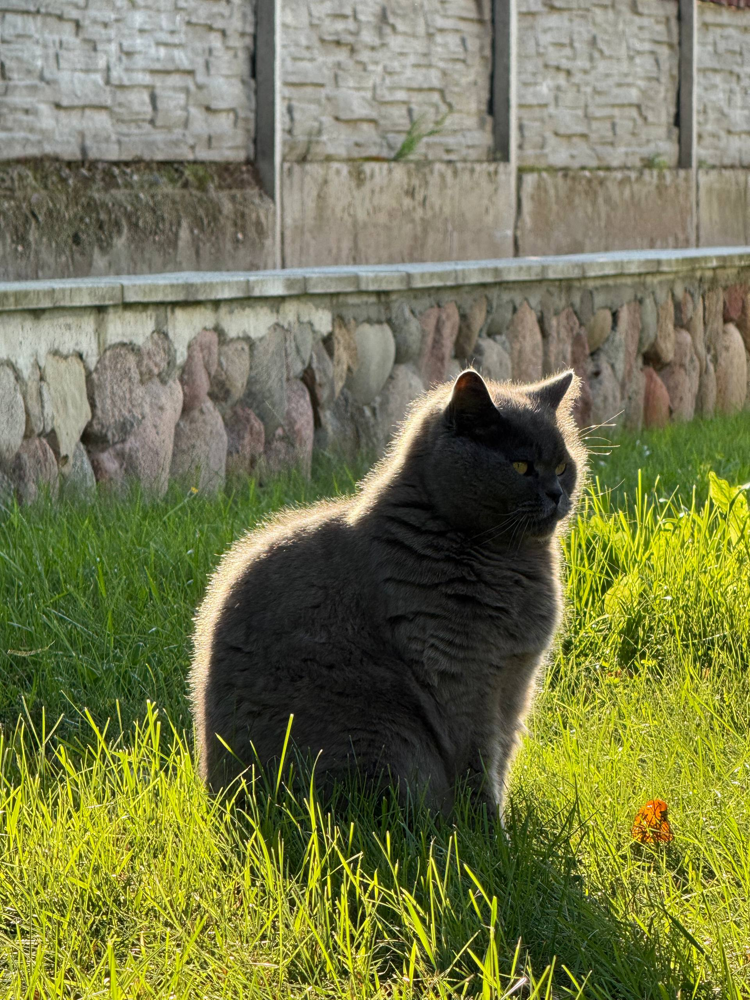

Британская кошка - это не просто домашний серый питомец которого можно в любое время взять на руки, погладить или класть себе в кровать. Ну уж нет.Это самостоятельная личность,которая однажды просто разрешит вам пожить у себя дома
Вот он наш котэ



Кто такая британка?
Британская кошка — это спокойное, доброе и очень самостоятельное животное. Она никогда не станет просто так нападать или кусаться, зато прекрасно умеет показывать свой характер.
На руки её взять можно. Она спокойно потерпит некоторое время, но долго сидеть там не захочет. Полежать рядом — пожалуйста, а вот спать на руках часами — это уже слишком много внимания.
Главная особенность нашей британки — её чувство собственного достоинства. Она не вредная и не агрессивная, просто считает, что в доме всё должно происходить по её правилам.
Как с ней жить? Да все просто!
На самом деле жить с ней совсем несложно. Главное — уважать её личное пространство, вовремя кормить и не забывать, что у неё тоже есть своё мнение.
- Не мешать ей, когда она отдыхает.
- Не занимать её любимое место.
- Вовремя давать вкусняшки.
- Иногда брать на руки, но не злоупотреблять.
- И главное — помнить, кто здесь принимает решения.
Каков итог
В итоге завести британку — отличная идея. Она добрая, спокойная и никогда не откажется от внимания, если сама этого захочет.
Главное — не забывать простое правило: ты можешь считать себя хозяином дома, но последнее слово всё равно останется за британкой.